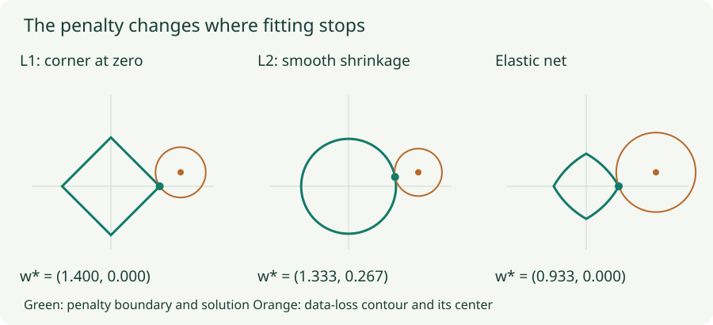

L1, L2, and Elastic Net: What the Penalty Actually Does
Derive shrinkage and sparsity, inspect the exact solutions, and distinguish a penalty from its optimization algorithm.
A regularizer expresses a preference among solutions that fit the training data. L1 prefers sparse coordinates; L2 discourages large weight magnitudes; elastic net combines the two. Those summaries become more useful once we see the exact objective and solve a small case.
1. Separate the data loss from the preference
Let $L(w)=\frac1N\sum_i\ell_i(w)$ be the average data loss. We will use the convention
Here $\|w\|_1=\sum_j|w_j|$ and $\|w\|_2^2=\sum_jw_j^2$. Setting $\lambda_2=0$ gives L1; setting $\lambda_1=0$ gives squared L2; using both gives an elastic-net penalty. The factor $1/2$ makes the L2 derivative $\lambda_2w$ rather than $2\lambda_2w$. A quoted coefficient is ambiguous unless this convention and the loss reduction are known.
The regularized solution can have a larger training data loss because the optimizer now minimizes $J$, not $L$ alone. Whether that tradeoff improves predictions on new examples must be evaluated on validation data. Regularization is not an instruction to make every weight as small as possible regardless of fit.
2. L2 produces proportional shrinkage
Consider the scalar objective $\tfrac12(w-z)^2+\tfrac\lambda2w^2$. The unregularized optimum is $z$. Differentiating gives $(w-z)+\lambda w=0$, so
With $z=2$ and $\lambda=0.5$, the optimum moves to $4/3$. A smaller coordinate $z=0.4$ moves to about $0.2667$. Both are multiplied by the same factor. For finite $\lambda$, a nonzero $z$ remains nonzero in this example.
For a general differentiable loss, a plain SGD update with L2 is $w\leftarrow(1-\eta\lambda)w-\eta\nabla L(w)$. The shrinkage appears alongside the data gradient. Adaptive optimizers change this equivalence with direct weight decay; the next chapter treats that distinction explicitly.
3. L1 creates a threshold at zero
Now minimize $\tfrac12(w-z)^2+\lambda|w|$. For $w>0$, the stationary equation is $w-z+\lambda=0$. For $w<0$, it is $w-z-\lambda=0$. These candidates only apply if they have the assumed sign.
At zero, $|w|$ has a range of subgradients, $[-1,1]$. Zero is optimal when the data-loss slope can be balanced by that range: $0\in-z+\lambda[-1,1]$, which holds when $|z|\le\lambda$. Combining the cases gives soft thresholding:
For $(z_1,z_2)=(2,0.4)$ and $\lambda=0.6$, the optimum is $(1.4,0)$. The weaker coordinate disappears entirely. This is the mechanism behind sparsity; it is more precise than saying that L1 “pushes harder toward zero.”

4. Elastic net thresholds, then rescales
For the same separable quadratic with both penalties, the exact coordinate solution is
With $z=(2,0.4)$, $\lambda_1=0.6$, and $\lambda_2=0.5$, this gives $(0.9333,0)$. L1 determines the zero region; L2 further shrinks coordinates that survive. The formula is exact for this quadratic, not a closed-form solution for an arbitrary deep network.
With correlated predictors, multiple coefficients can explain similar variation. L1 can favor one member of a correlated group; adding a quadratic penalty tends to discourage concentrating all the weight in one coefficient. The elastic-net paper develops this grouping motivation. It does not establish a universal best penalty for every dataset.
5. Lab: inspect the zero region
Exact coordinate solutions
Change the two penalty strengths and the unregularized optimum. The three curves show solved objectives, not simulated training trajectories.
Move $z$ slowly across $\lambda_1$. L1 stays exactly at zero until the threshold is crossed. Then increase $\lambda_2$: the elastic-net slope changes outside the threshold, while the zero interval stays put. Setting both strengths to zero restores the unregularized answer.
6. An L1 term does not guarantee exact zeros from SGD
Adding $\lambda_1|w|$ to a loss and taking finite gradient steps is not the same as solving its nonsmooth objective exactly. A subgradient step can cross zero and oscillate around it. Many automatic-differentiation systems choose zero as the derivative of absolute value at zero; that choice alone is not the full optimality condition above.
A proximal-gradient step handles the penalty explicitly. First follow the smooth data gradient, $z=w-\eta\nabla L(w)$, then solve a nearby penalized quadratic:
# Proximal gradient for a smooth data loss plus elastic net.
z = weight - lr * data_gradient
weight = z.sign() * (z.abs() - lr * lambda1).clamp_min(0)
weight /= 1 + lr * lambda2This is the proximal operator for the stated penalty under a Euclidean step metric. Combining it with an adaptive optimizer requires deciding which metric and algorithm you mean; blindly inserting it into any update is not an equivalence proof.
7. Other norm penalties choose other kinds of simplicity
| Penalty | What it encourages | What to distinguish |
|---|---|---|
| L1 on weights | Individual zero coordinates | Unstructured zeros do not automatically speed up dense kernels. |
| Group lasso: $\sum_g\|w_g\|_2$ | Entire predefined groups disappearing | The unsquared group norm has a corner when a whole group is zero. |
| Sparse group lasso | Zero groups and sparsity within surviving groups | Combines a group penalty with entry-wise L1. |
| Nuclear norm: $\sum_i\sigma_i(W)$ | Low-rank matrices | Acts on singular values, not individual entries. |
| L0 count | Few nonzero entries directly | Discontinuous and nonconvex; usually needs specialized approximations or selection methods. |
For a group vector $z$, the group-norm proximal map is $(1-\tau/\|z\|_2)_+z$: if the group norm is below the threshold, the whole group vanishes. In the nuclear-norm analogue, threshold singular values and reconstruct the matrix. These choices encode different structures rather than interchangeable definitions of “small.”
8. Scale and parameterization matter
Multiplying a feature by 100 allows its coefficient to shrink by 100 without changing a linear prediction, altering its penalty. Feature scaling therefore changes the meaning of a shared penalty coefficient. In a deep ReLU network, reciprocal rescaling of adjacent layers can likewise preserve the represented function while changing individual weight norms.
Choose which parameters are penalized intentionally. Biases and normalization gains often receive separate treatment, but this is an architectural choice, not a theorem that they must never be penalized. If you add a loss penalty and also enable optimizer decay, document whether you intended both effects. Compare validation behavior and useful sparsity, not only the numerical weight norm.
Questions with answers
L1 has a subgradient interval at zero, allowing a range of data-loss slopes to be balanced there. Squared L2 has a smooth derivative that vanishes at zero.
No. Different strengths define different objectives. Choose strength using held-out validation performance for the intended task.
Not necessarily. Dense kernels usually still process stored zero entries. Structured pruning or supported sparse computation is needed to translate many sparsity patterns into speed.
Sources
Zou and Hastie, Regularization and Variable Selection via the Elastic Net; Goodfellow, Bengio, and Courville, Deep Learning, Chapter 7. The solved quadratics, geometry figure, and interactive calculations are original constructions.